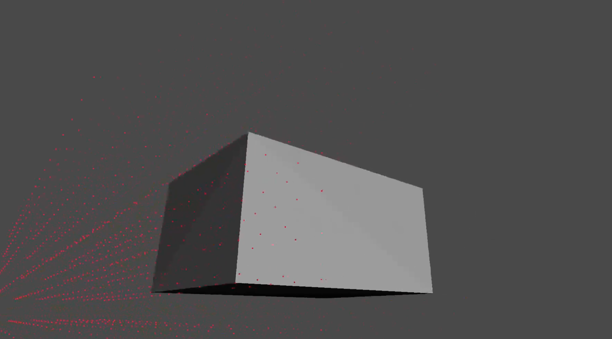

3D Graphics Engine
GitHub
Ongoing project to create a 3D graphics engine that uses trig for calculations.
Goal
A project to exercise my knowledge of programing and math concepts. I refrained from the usage of tutorials and online resources and attempted to derive equations for perspective, movement, etc. from scratch. Although the program is a bit rough around the edges, it was very fun to attempt a difficult project such as this without prior research or knowledge of concepts pivotal to the field such as an understanding of perspective and field of view. I have already learned so much from the challenges I faced trying to derive these equations coming out with a foundational understanding of these concepts. I also stretched my programming skills to the max in this project optimizing data structures and algorithms to optimize performance. In its current state, the engine can render an object with over 30000 faces with over 15 fps. I hope you enjoy this project!